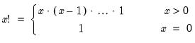

@fact Element Functions Factorial function. Syntax: @fact(x) x: integer Return: number  for integer . Note that this function is subject to overflow for large . • @gamma may be used to obtain results for real valued . • Related, stable calculations for the logarithm of @fact may be obtained using @factlog. Examples = @fact(3) returns 6. Cross-references See also @factlog.


 . Note that this function is subject to overflow for large
. Note that this function is subject to overflow for large  .
.  .
.